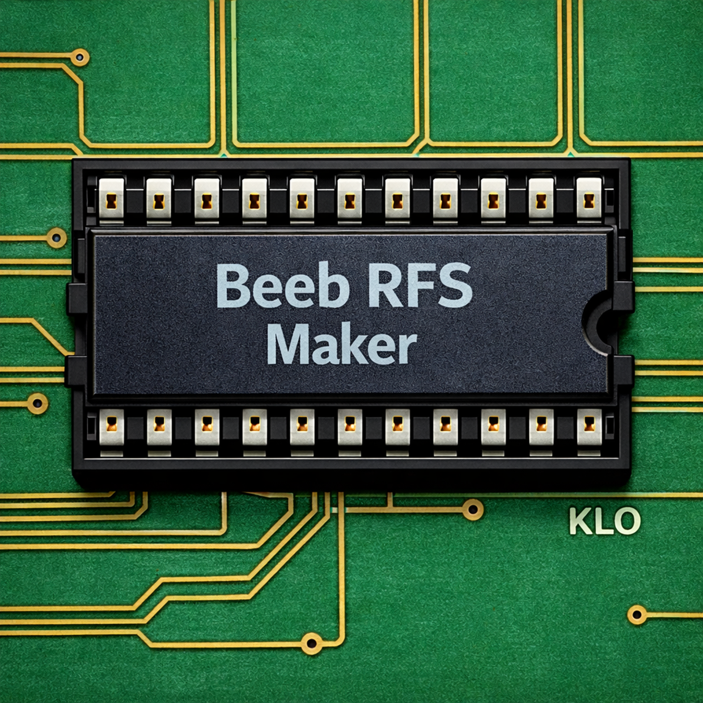

Compressed ROM Filing System packer and extractor for the BBC Micro
Windows WinUI 3 BBC Micro FreeBeebRFSMaker is a Windows application for packing files into a BBC Micro Compressed ROM Filing System (CompRFS) image, and extracting files back out again. It is compatible with the comprom.pl v2.10 format by Greg Cook, and produces sideways ROM images that can be used directly with a BBC Microcomputer or emulator.

To use it, simply drag and drop files from you PC onto the area labeled "Drop PC files here". The files will be listed in the area below with their name, load and exec addresses, and size in bytes. The files in the list are compressed into a ROM image. By using the radio buttons at the top you can see the content of the selected file from the list, or the ROM image, or the Event Log, in the preview window which takes up most of the left hand side of the app. If the combined total file size after compression wil fit within a 16 KB ROM then the "Create RFS ROM Image" button will be enabled, and you can choose where to save the ROM image with a .rom extension.
If you drop a .rom file onto the app it will offer to extract the content into a location of your choice, and optionally add those files to whatever is already in the list. You can also use this feature just to extract files from a compatible ROM image.

Packing a set of BBC Micro files into a 16 KB sideways ROM image

Extracting files from an existing CompRFS ROM image, with optional .inf sidecar files
Select a folder of files and pack them into a standard 16 KB sideways ROM image. BBC Micro filenames, load addresses, and execution addresses are read from .inf sidecar files if present.
Open any compatible CompRFS ROM image and extract its files back to a folder, generating .inf sidecar files that have become the de facto standard for preserving BBC Micro metadata — filename, load and execution addresses, and file length.
The pack output shows each file’s raw and compressed sizes so you can see at a glance how efficiently your files compress, and whether everything fits in the 16 KB slot.
Produces byte-identical ROM images to the original comprom.pl v2.10 Perl script by Greg Cook, so ROMs built with BeebRFSMaker work with any BBC Microcomputer or emulator such as BeebEm.
Customise the ROM title (shown by *ROMS), catalogue title (shown by *CAT), copyright string, and version string.
A corresponding command-line tool, BeebRFSMakerCL, which uses the same pack and extract classes as the UX app, provides a full command-line interface for scripting and automation, compatible with batch files and build pipelines.

The Compressed ROM Filing System format, created by Greg Cook, stores files in a standard BBC Micro 16 KB sideways ROM using a compressed stream that begins after a conventional Acorn ROM header at &8000 and a small 6502 decompressor stub at &8040. The stream uses four compression mechanisms: a digraph table of up to 85 frequent two-byte pairs each encoded as a single byte token, a dictionary of up to 128 longer repeated sequences each referenced by a two-byte address token, run-length encoding for repeated byte values, and literal escape sequences for bytes that cannot otherwise be represented. Dictionary entries may chain up to nine levels deep, and since the ROM Filing System requires each file header to be directly addressable, each file’s stream is generated separately and chained to the next via a link field. The result is a self-delimiting compressed stream that the decompressor stub decodes on the fly in response to standard MOS ROM Filing System service calls, requiring no RAM workspace beyond a handful of zero-page locations.
BeebRFSMaker implements the full comprom.pl v2.10 compression algorithm:
The compressor analyses all the files together to build a shared dictionary, so common patterns across multiple files all benefit from the same tokens.
The app can be installed from the Microsoft Store. Source code is available on GitHub:
BeebRFSMaker
Requires Windows 10 (build 1809) or later.
BeebRFSMaker is compatible with the Compressed ROM Filing System v2.10 format. ROM images produced by BeebRFSMaker can be used with:
BeebRFSMaker is free software. The CompRFS format and original comprom.pl script are by Greg Cook.
← BeebRFSMakerCL ← Back to KLO Software